Banco de 12 sesiones tipo
Estas son las 12 piezas con las que rellenas los días de tu plan (la Sesión 0 de tests + 11 sesiones de trabajo, A→K). Cada una tiene su pizarra, su objetivo y sus parámetros (series, tiempos, densidad). Ajusta el formato al número de jugadores que tengas; los parámetros son orientativos.
Cómo usarlas: mira el contenido que pide el día en tu plan (p. ej. "pico: condicional con balón") y elige la sesión correspondiente del banco. Combina 2-3 piezas para montar una sesión completa (calentamiento + parte principal + ajuste).
Sesión 0 · Tests de campo (sin GPS)
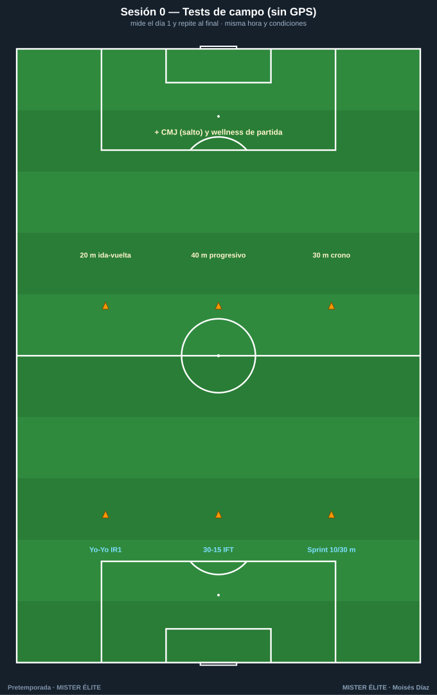
Objetivo: medir el punto de partida para saber si la pretemporada funciona. El día 1 y al final. - Yo-Yo IR1 o 30-15 IFT — motor aeróbico intermitente (el 30-15 además te da la velocidad para prescribir el HIIT). - Sprint 10 y 30 m con cronómetro — velocidad. - CMJ (salto vertical) — frescura neuromuscular. - Wellness de partida — referencia individual.
Misma hora, mismo terreno, mismo calentamiento, para que la comparación valga.
BLOQUE FÍSICO
Sesión A · Base aeróbica: posición a gran formato
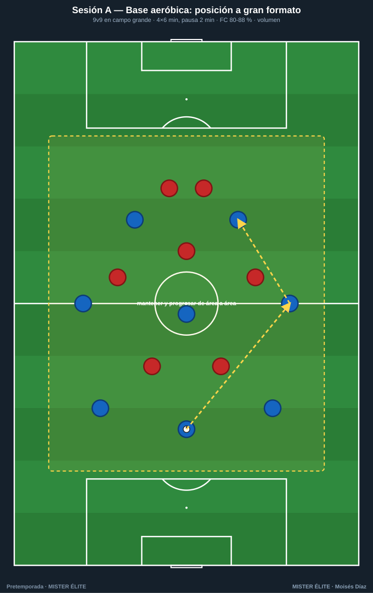
Objetivo: base aeróbica (semanas 1-2). 9v9 en campo grande, mantener y progresar de área a área. Parámetros: 4×6 min, pausa 2 min · FC 80-88 % · densidad media. Mucho volumen, intensidad controlada.
Sesión B · HIIT con balón: 4v4 intermitente
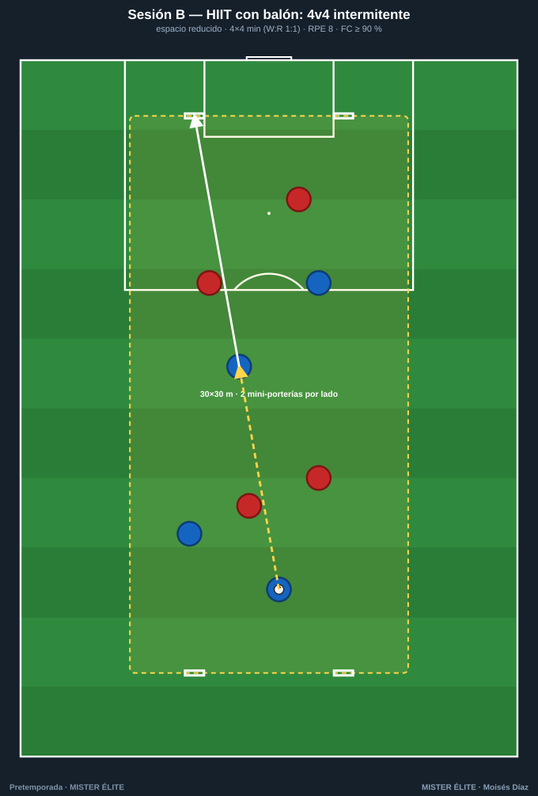
Objetivo: potencia aeróbica (semanas 2-4). 4v4 en 30×30 m con 2 mini-porterías por lado. Parámetros: 4×4 min (trabajo:pausa 1:1) · RPE 8 · FC ≥ 90 %. Espacio reducido = mucha intensidad.
Sesión C · RSA: juego de transiciones
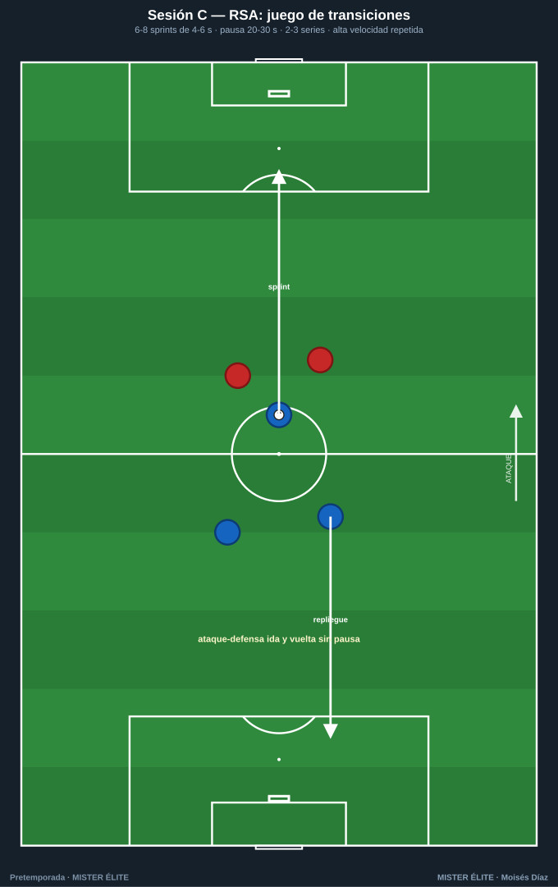
Objetivo: capacidad de sprints repetidos (semanas 3-5). Ataque-defensa ida y vuelta sin pausa. Parámetros: 6-8 sprints de 4-6 s, pausa 20-30 s · 2-3 series, descanso 3-4 min entre series.
Sesión D · Velocidad y aceleraciones (fresco)
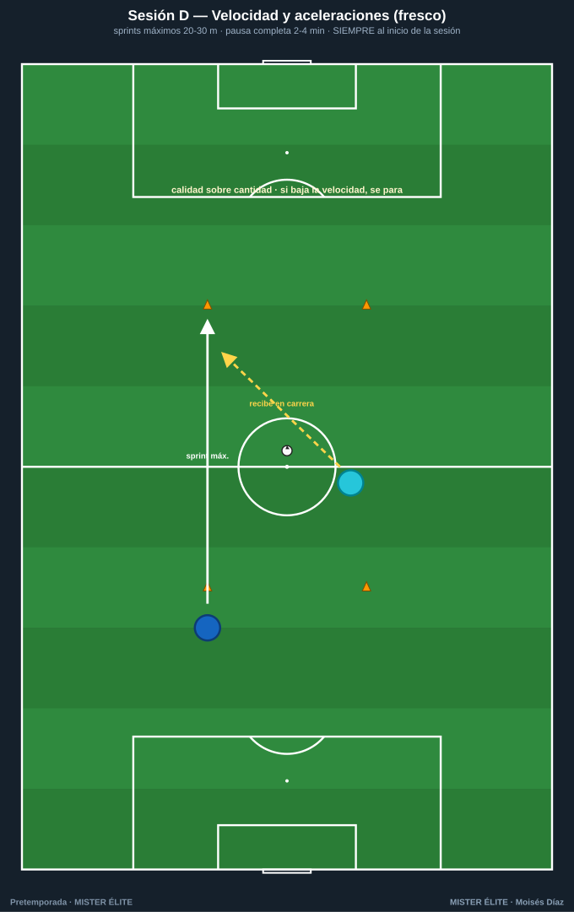
Objetivo: velocidad y potencia (semanas 4-6). Siempre al inicio de la sesión, con el jugador fresco. Parámetros: sprints máximos 20-30 m, pausa completa 2-4 min. Calidad sobre cantidad: si baja la velocidad, se para.
Sesión E · Fuerza y prevención (circuito)
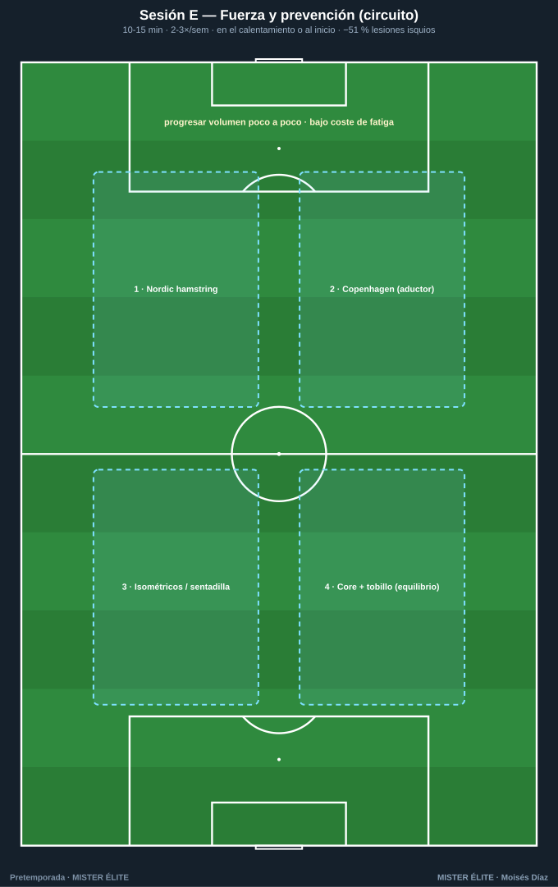
Objetivo: prevención de lesiones (todo el bloque, casi a diario). 4 estaciones. Parámetros: 10-15 min · 2-3 veces/semana · en el calentamiento o al inicio. Progresar el volumen poco a poco. Reduce ~51 % las lesiones de isquios.
BLOQUE FÍSICO-TÁCTICO (el físico dentro del balón)
Sesión F · Rondo de alta densidad
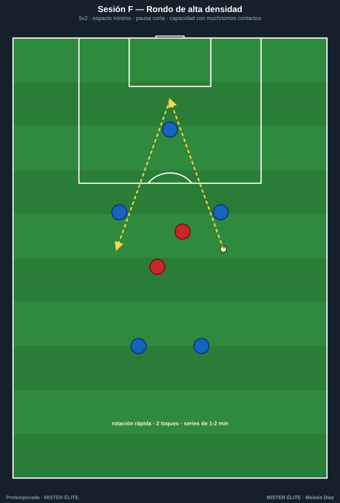
Objetivo: capacidad con muchísimos contactos. 5v2 en espacio mínimo. Parámetros: rotación rápida, 2 toques, pausa corta · series de 1-2 min. Calentamiento o trabajo de capacidad.
Sesión G · Juego de posición condicional
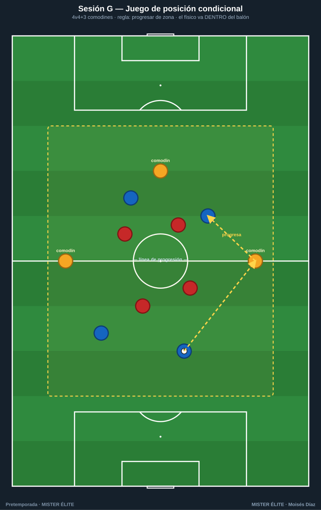
Objetivo: físico dentro del balón + táctica de posición. 4v4+3 comodines. Parámetros: regla "progresar de zona para puntuar" · series de 3-4 min. Ajusta espacio para subir/bajar la intensidad.
BLOQUE TÁCTICO
Sesión H · Fase de juego: salida de balón
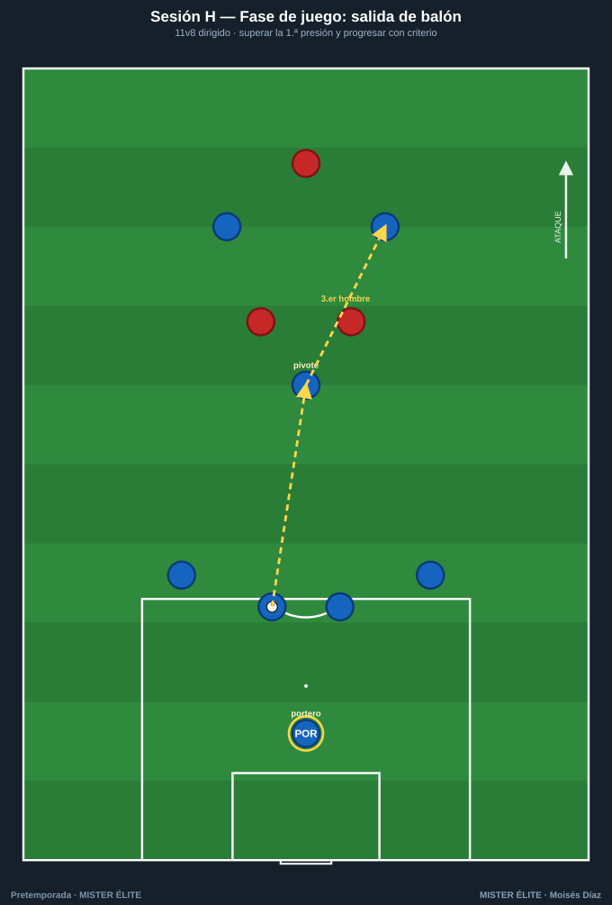
Objetivo: superar la 1.ª presión y progresar. 11v8 dirigido. Clave: atraer, encontrar al hombre libre, jugar al tercer hombre. Introduce en transformación (semana 3).
Sesión I · Presión tras pérdida (contrapresión)
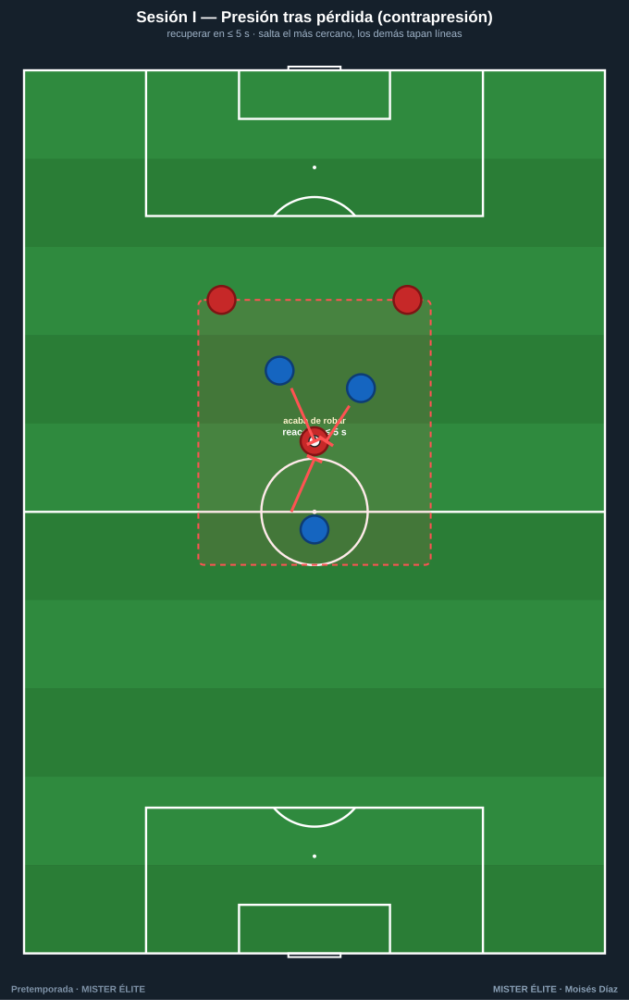
Objetivo: recuperar en ≤ 5 s tras perder. Salta el más cercano, los demás tapan líneas. Clave: reacción inmediata; la zona de reacción marca dónde apretar. Buen estímulo físico-cognitivo.
Sesión J · Posesión para finalizar
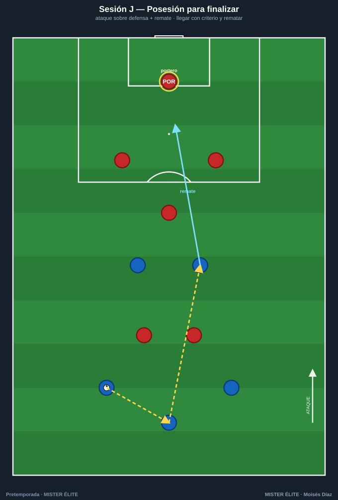
Objetivo: llegar con criterio al área y rematar. Ataque sobre defensa + portero. Clave: posesión con finalidad, no estéril. Premia el remate tras romper líneas.
Sesión K · Partido dirigido a gran formato
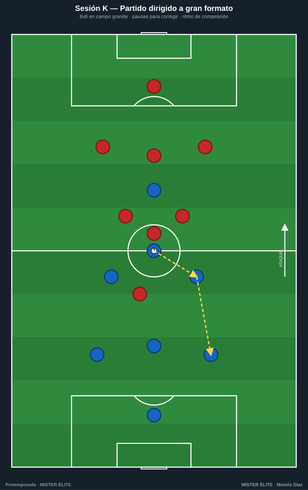
Objetivo: integrar todo a ritmo de competición. 8v8 en campo grande. Clave: pausas para corregir (congelar y reposicionar). Gran herramienta de transformación y realización.
Montar una sesión completa (ejemplo, día de pico con 5 sesiones): calentamiento con Sesión E (prevención, 12') → parte principal con Sesión B (HIIT 4v4) → cierre con Sesión H (fase de salida) o Sesión K (partido dirigido). Total ~75-85 min, orientación dominante clara (intensidad), prevención cubierta.